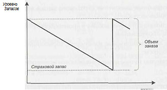
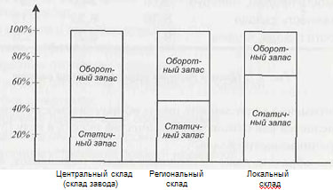
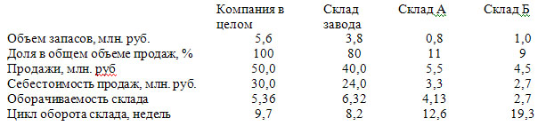
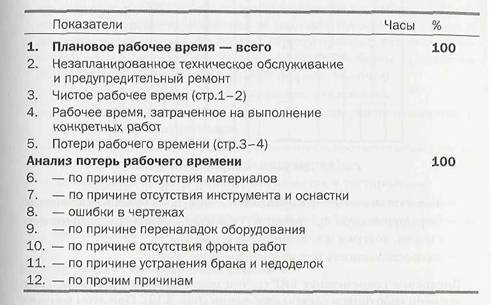
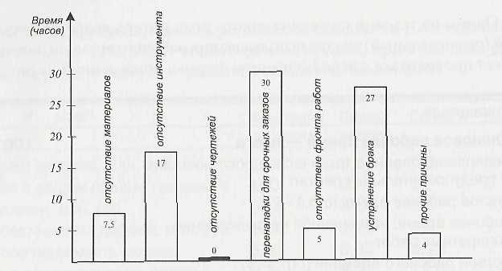
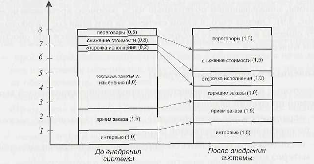
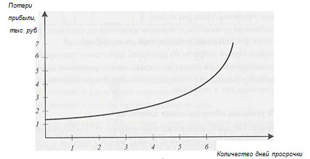
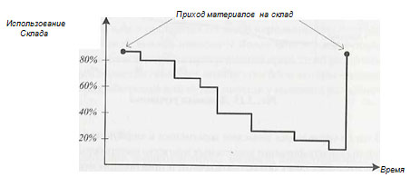

Какие факторы делают производство неэффективным и какие выгоды может принести проект внедрения? Для этого в качестве наиболее типичных факторов неэффективности (проблем, свойственных большинству предприятий) выделим следующие:
В качестве причин необоснованно большого объема незавершенного производства можно отметить:
Для оценки незавершенного производства применяют такие показатели, как оборачиваемость незавершенного производства (отношение себестоимости продаж к среднегодовому объему незавершенного производства) и средняя продолжительность производственного цикла (отношение количества дней или недель в году к оборачиваемости незавершенного производства).
Необоснованно большие складские запасы могут возникать по следующим причинам:
Особо отметим два момента: высокий средний уровень запасов (включая страховой запас) и запасы, созданные для дистрибуции.
Модель движения складских запасов и принцип создания страхового запаса уже рассматривались при обсуждении управления запасами по точке перезака.ча. В любом случае движение запасов описывается графиком, изображенным на рис. 5, а величина страхового запаса определяется в процентах от среднего уровня.
 |
Как показывает практика, даже на прогрессивных предприятиях страховой запас составляет от 30 до 40% от среднего уровня. А теперь сравним эти так называемые «инвестиции» с реальной необходимостью в стра¬ховом запасе — и разница, скорее всего, окажется весьма и весьма значительной! А если учесть, что уровень запасов — это еще и строка в бухгал-терском балансе компании, то можно оценить объем финансовых средств, которые высвободятся и будут направлены в оборот.
В случаях, когда компания имеет удаленные склады, это обычно негативно влияет на общий уровень запасов: ведь оборачиваемость запасов, как правило, снижается по мере их удаления от источника поставок. Данная ситуация выглядит примерно так, как показано на рис. 6.
 |
Анализ уровня запасов в сравнении с годовым объемом продаж с того или иного склада поможет выявить возможности дополнительного снижения запасов. Каждому понятно, что неэффективная логистика (хранение, транспорт, управление складами) негативно влияет на качество сервиса и имидж компании. Однако бывает не так просто оцепить это влияние в стоимостном выражении, а тем более — увязать эту стоимостную оценку с бухгалтерским балансом и другими финансовыми отчетами компании.
Для иллюстрации такой оценки рассмотрим пример.
Допустим, что некоторая компания имеет один центральный завод со складом готовой продукции и два удаленных (дистрибьюторских) склада. Один из них (в регионе А) находится в 500 километрах от завода, а другой (в регионе Б) - и 100 километрах. Общий складской запас оценивается в 5,6 млн. руб. (распределение между складами приведено в таблице) и обслуживает годовой объем продаж в 50 млн. руб. (на первый взгляд, не так уж и плохо).
Но следует обратить внимание на то, что себестоимость продаж составляет 60% от реализации (30 млн. руб.) и существенно снижает оборачиваемость запасов (отношение себестоимости проданных товаров к среднегодовому запасу). Более того, центральный склад обслуживает также и клиентов, расположенных в регионах А и Б. Как показывают расчеты, прямые продажи в регионах со складов А и Б составляют соответственно 11 и 9% от общего объема продаж, при этом доля Продаж непосредственно с централыюго склада составляет 80%.
 |
Заметим, что длительность цикла оборачиваемости запасов на складе вычисляется как отношение количества педель в году (52) ко времени оборачиваемости склада.
Таким образом, даже несложный анализ показывает, что влияние расстояния на запасы далеко не всегда пропорционально затратам на транспортировку. Поэтому инвестиции в систему дистрибуции, особенно для «быстрооборачивающихся» товаров (например, для товаров повседневного спроса), требуют особого внимания. Таким образом, организация удаленных складов требует отдельного экономического обоснования.
В данном случае под производственными peсурсами понимаются машины и оборудование, задействованные в производственном процессе, а также персонал, обеспечивающий работу машин и их техническое обслуживание. Наиболее характерными явлениями в этой области следует признать:
Одним из условий снижения такого рода потерь является регулярный (еженедельный) анализ использования рабочего времени, который может проводиться с использованием формы, приведенной на рис. 8.
 |
Анализ потерь рабочего времени, во-первых, позволяет систематизировать причины и оценить удельный вес каждой из них, а во-вторых, помогает оценить позитивные изменения, которые должны произойти после ввода в эксплуатацию новой автоматизированной системы.
Такой анализ также удобно производить в виде столбиковой диаграммы, показывающей потерянные часы рабочего времени в неделю (рис. 9). Оценка того, в какой степени та или иная составляющая будет снижена в результате внедрения, также учитывается при обосновании инвестиций.
 |
Некоторые из причин завышения материальной составляющей выпускаемой продукции включают:
Внедрение современных ERP-систем резко изменяет распределение времени работников службы снабжения (рис. 10). При этом компьютерная система берет на себя расчеты и обработку прочих рутинных операций, оставляя человеку время для решения неформальных задач, включая установление прочных отношений с поставщиками и транспортными организациями и экономический анализ своей деятельности. А именно в решении этих вопросов скрыты резервы уменьшения стоимости сырья и материалов.
 |
Вопросы контроля качества актуальны не только для производства, но и для всех остальных сфер деятельности предприятия — от проектирования нового изделия до его доставки конечному потребителю. Недостаточная проработка договоров на поставку готовой продукции и декларирование нереальных сроков отгрузки приводят к снижению качества, а это, в свою очередь, порождает новые проблемы. Недостатки качества проявляются в самых разных формах, включая:
Проблемы обслуживания клиентов имеют место по следующим причинам:
Последствия задержки поставок трудно оценить в количественном выражении. В качестве оценочного варианта может быть предложен следующий подход. Можно спрогнозировать, на сколько процентов снизился бы объем продаж, если бы качество обслуживания уменьшилось на 10%. Ответ на этот вопрос можно рассматривать лишь как прогноз, а точнее — как экспертную оценку, основанную скорее на практическом опыте (или даже на интуиции), чем наточном расчете. Полученная оценка послужит базой для ответа на другой вопрос: на сколько процентов увеличится объем продаж, если уровень обслуживания повысить на 10%.
Оценку роста реализации в таких случаях рекомендуется считать равной половине оценочной величины возможного падения продаж.
По мнению авторов, соотношение между степенью снижения качества обслуживания и падением объема продаж следует оценивать примерно как 1:2. Это означает, что 5%-ное снижение обслуживания должно приводить к 10%-ному снижению продаж.
Что касается зависимости финансовых потерь от среднего периода задержки поставок, то здесь трудно дать универсальную рекомендацию. Можно лишь отметить, что эта зависимость носит нелинейный характер: чем больше период задержки, тем больше рост потерь (рис. 11).
 |
Ошибки при калькуляции себестоимости продукции, определении отпускных цен обычно возникают в следующих случаях:
В этой области наиболее существенными представляются следующие факторы:
Традиционный подход к управлению складом предусматривает концентрацию внимания каждого руководителя на состоянии дел только на своем участке. При этом общая загрузка складов может составлять около 60% или даже менее (рис 12). При использовании управленческой информационной системы ситуация в корне меняется: товары и материалы могут быть размещены на любом из складов, поскольку система располагает всеми необходимыми данными о загрузке каждого из них. Кроме того, упрощаются рутинные процедуры, включая учет наличия и движения товарно-материальных запасов.
 |
Многие проблемы предприятий проявляются также и в учетно-финансовой сфере. Отсутствие существенной, своевременной и точной информации неизбежно приводит к снижению эффективности управления финансами, что, в свою очередь, увеличивает затраты и снижает прибыль.
В части финансовых взаимоотношений с клиентами организационные недостатки приводят к увеличению сроков поставки продукции, снижению качества сервиса, увеличивают период инкассации дебиторской задолженности. В конечном счете это негативно влияет па рабочий капитал и прибыль предприятия.
В части отношений с поставщиками также могут наблюдаться неоправданно долгие
сроки поставок, а также нерациональное применение скидок при финансовых расчетах.
Интеграция операций снабжения с функциями обработки счетов кредиторов существенно
упорядочивает этот процесс, снижая при этом риски возможных ошибок.